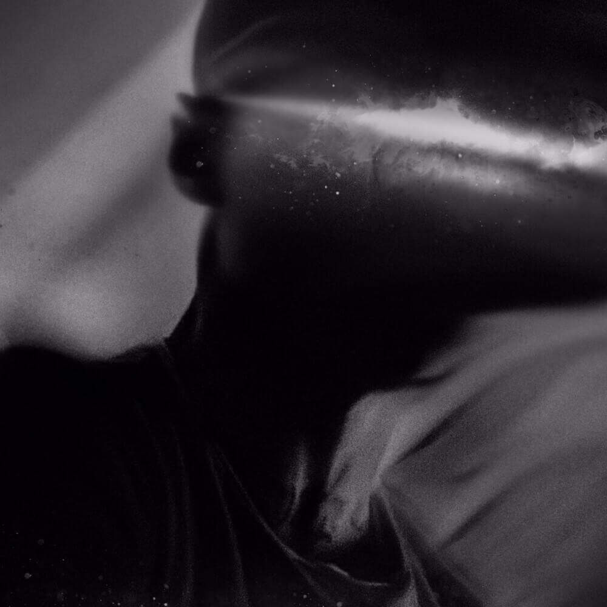

Rap, music number one of the 20th centuries
In 2022, rap has nothing more to prove, it is now for more than ten years, especially among young people and all over the world.
Rap is indeed, part of the music most listened to. Indeed, the first download platform, like Napster or others were the first to offer this type of music as well as promotion on social networks. It is not surprising that young people are the ones who listened to rap the most since most of the promotion of rap is on social networks precisely to target young people. Millions of followers until the dissimilation on the internet of all the elements necessary for the success of a career without even going to ask the help of anybody. This is one of the reasons that rap has a very big importance in the world of music. On can therefore say that rap has indeed gained popularity and even more than that. For example, several rappers have been able to emerge thanks to the power of the web and the visibility it offers, especially with a type of music strongly loved by young people obviously extremely present on social networks. In addition, the visibility allows rappers to be visible all over the world unlike most artiste who’s are seen only in their country. Rappers have the chance to be in concert all over the world thanks to the often widely shared broadcasts on social networks.
To conclude we can say that the debate of the legitimacy of rap are over. Gone is the struggle for media visibility. Rap has come full circle. Rap in 2022 is everywhere, absolutely everywhere and certainly for a long time. It is obviously one of the most listened music in twenty first centuries.
In 2022, rap has nothing more to prove, it is now for more than ten years, especially among young people and all over the world.
Rap is indeed, part of the music most listened to. Indeed, the first download platform, like Napster or others were the first to offer this type of music as well as promotion on social networks. It is not surprising that young people are the ones who listened to rap the most since most of the promotion of rap is on social networks precisely to target young people. Millions of followers until the dissimilation on the internet of all the elements necessary for the success of a career without even going to ask the help of anybody. This is one of the reasons that rap has a very big importance in the world of music. On can therefore say that rap has indeed gained popularity and even more than that. For example, several rappers have been able to emerge thanks to the power of the web and the visibility it offers, especially with a type of music strongly loved by young people obviously extremely present on social networks. In addition, the visibility allows rappers to be visible all over the world unlike most artiste who’s are seen only in their country. Rappers have the chance to be in concert all over the world thanks to the often widely shared broadcasts on social networks.
To conclude we can say that the debate of the legitimacy of rap are over. Gone is the struggle for media visibility. Rap has come full circle. Rap in 2022 is everywhere, absolutely everywhere and certainly for a long time. It is obviously one of the most listened music in twenty first centuries.
